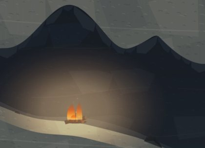

A persistent multiplayer sandbox
Archē
The Living World
A world to pay attention to. Try something and see how it responds.
Play on mobile or desktop. Archē is coded entirely by AI and continually shaped by feedback from the people who play it.
Enter the world
Take your time
Watch where the rain falls. Follow a cave until it turns. Try to float something you’ve made. You find out what’s possible as you go, and what you notice and do shapes your relation to the world. What you leave behind can become part of someone else’s walk.
Latest from the journal · 27 November 2026
Cave wall detail in firelight
Rock texture remained faint beside a burning campfire.
Read the field note